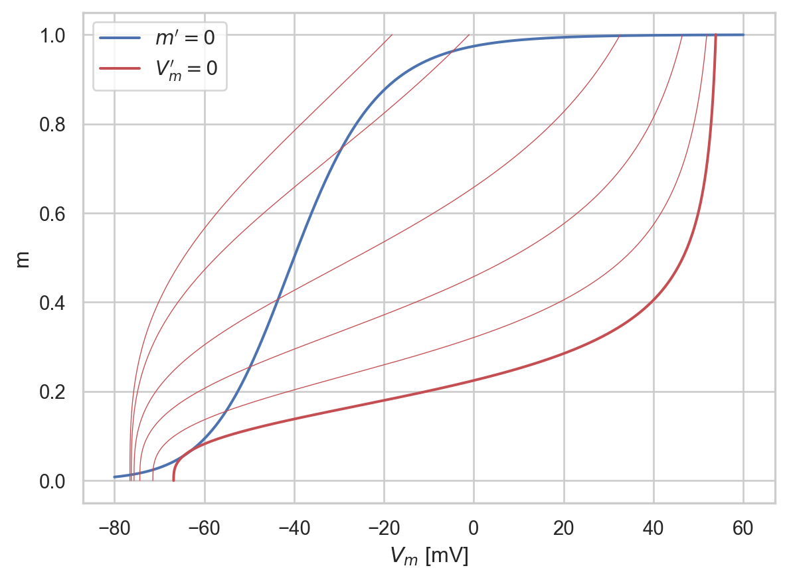
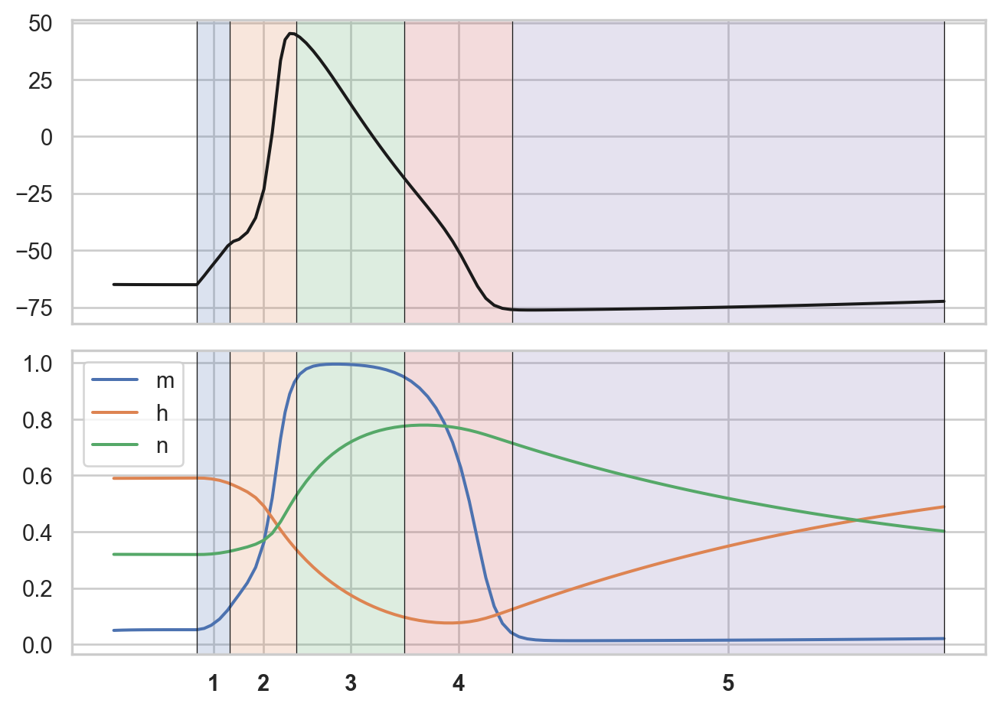
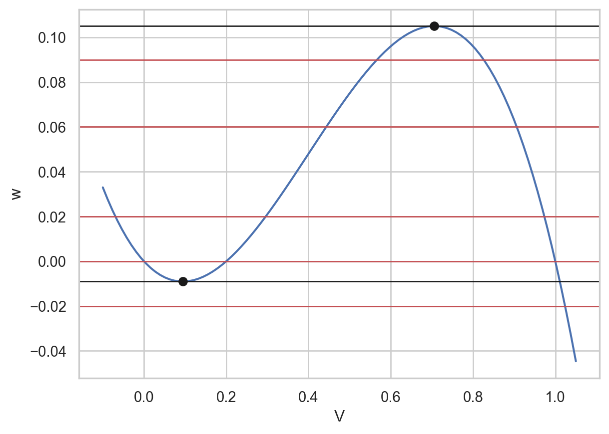
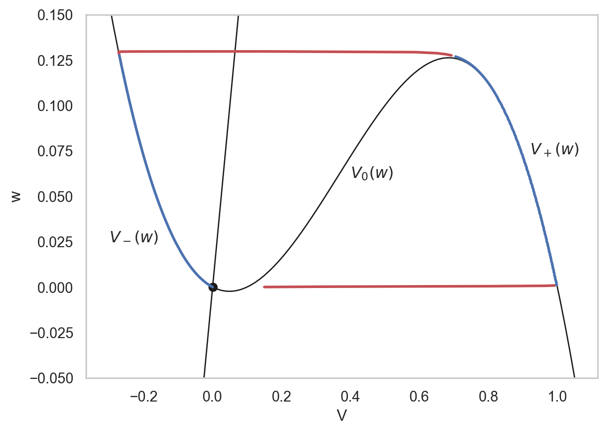
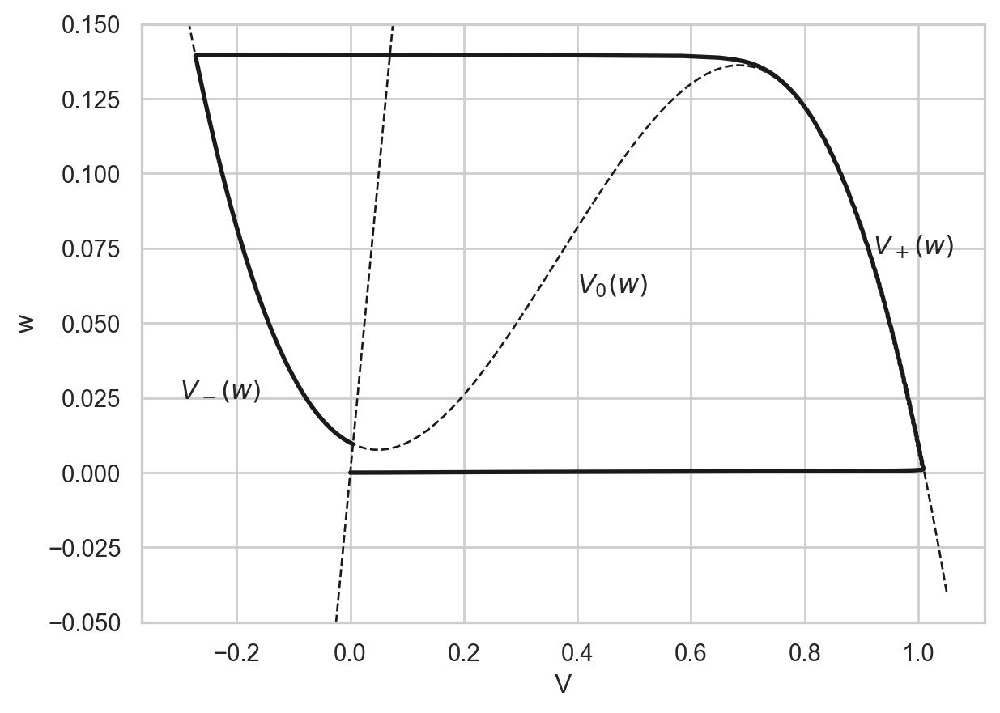
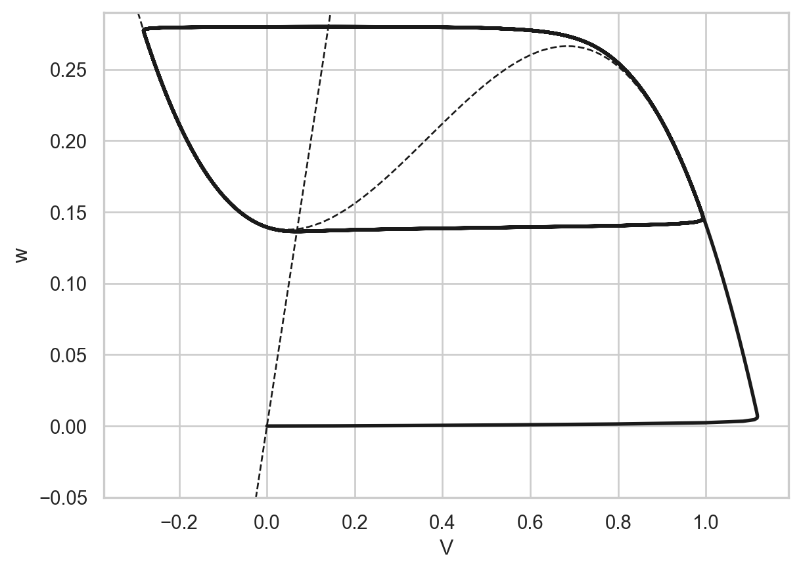

The complete form of the Hodgkin-Huxley model is the following: \[
\left\{ \begin{aligned}
- C_\mathrm{m} \frac{\mathrm{d}V_\mathrm{m}}{\mathrm{d}t} &= \bar{g}_\text{Na} m^3 h (V - V_\text{Na}) + \bar{g}_\text{K} n^4 (V - V_\text{K})+ \bar{g}_\text{leak} (V - V_\text{leak}) - I_\mathrm{stim}(t), \\
\frac{\mathrm{d}n}{\mathrm{d}t} &= \alpha_n(V_\mathrm{m}) (1-n) - \beta_n(V_\mathrm{m}) n, \\
\frac{\mathrm{d}m}{\mathrm{d}t} &= \alpha_m(V_\mathrm{m}) (1-m) - \beta_m(V_\mathrm{m}) m, \\
\frac{\mathrm{d}h}{\mathrm{d}t} &= \alpha_h(V_\mathrm{m}) (1-h) - \beta_h(V_\mathrm{m}) h.
\end{aligned}\right.
\]
The parameters of the model per \(1\,\text{cm}^2\) are as follows: \(C_\mathrm{m} = 1\,\text{$\mu$F}\), \(g_\text{Na} = 120\,\text{mS}\), \(g_\text{K} = 36\,\text{mS}\), \(g_\text{leak} = 0.3\,\text{mS}\), \(V_\text{Na} = 55\,\text{mV}\), \(V_\text{K} = -77\,\text{mV}\), \(V_\text{leak} = -54.4\,\text{mV}\).
Concerning the transition rates, we have the following for \(\tau_{\{m,h,n\}}(V_m)\) and \({\{m,h,n\}}_\infty\):
Notice that we can trigger an action potential only for a sufficiently large stimulus. This is a manifestation of excitability: when the stimulus is large enough, the potential will raise automatically to an excited value, and recover afterwards. Otherwise, when the stimulus is small (or too short), we essentially have a passive behavior, similar to an RC circuit.
13.2 Fast-fast analysis
The model is too complex for an explicit computation, but we can get some insights into excitability with the fast-slow analysis.
In the 1960s, FitzHugh observed that the model has a fast-slow structure, were:
\(m(t)\) and \(V_m(t)\) are fast,
\(n(t)\) and \(h(t)\) are slow.
In fact, \(\tau_m \ll \tau_n, \tau_h\). The same we observe for \(V_m\) due to the large conductivity of the sodium. Therefore, we can study the fast dynamics by fixing \(n(t)=n_0\) and \(h(t)=h_0\): \[
\left\{ \begin{aligned}
- C_\mathrm{m} \frac{\mathrm{d}V_\mathrm{m}}{\mathrm{d}t} &= \bar{g}_\text{Na} m^3 h_0 (V - V_\text{Na}) + \bar{g}_\text{K} n_0^4 (V - V_\text{K})+ \bar{g}_\text{leak} (V - V_\text{leak}), \\
\tau_m(V) \frac{\mathrm{d}m}{\mathrm{d}t} &= m_\infty(V) - m.
\end{aligned}\right.
\]
The saddle has a stable manifold, indicated in the above figure, that separates the phase space in two parts: if we start from the right of it, we converge towards the resting equilibrium, otherwise we go towards the excited state. The bistable behavior explains the excitability of the system: starting from the resting membrane potential, if we apply a sufficiently large current we can move the state to the right of the manifold, and obtain an action potential.
Therefore, the fast dynamics brings the system to the excited state (the upstroke phase of the action potential). Once we reach the equilibrium, the slow dynamics enters, moving \(n\) and \(h\) away from their resting value. In particular, \(n\) will increase while \(h\) will decrease. As we do so, the nullcline for \(V_m\), in the fast system, will shift:
Code
import matplotlib.pyplot as pltimport seaborn as snsimport numpy as npfrom hhmodel import x_over_expm1sns.set_theme("notebook", style="whitegrid")alpha_m =lambda V: x_over_expm1(-(40+V)/10)beta_m =lambda V: 4* np.exp(-(V +65) /18)g_Na=120; g_K=36; g_l=0.3V_K=-77; V_Na=55; V_l=-54.4C_m =1.0V = np.linspace(-80,60,1000)m = np.linspace(0,1,1000)tau_m =lambda V: 1/(alpha_m(V)+beta_m(V))m_inf =lambda V: alpha_m(V)/(alpha_m(V)+beta_m(V))# solve wrt to VV_m =lambda m,h0,n0: (g_Na*h0*m**3*V_Na+g_K*n0**4*V_K+g_l*V_l)/(g_Na*h0*m**3+g_K*n0**4+g_l)fig, ax_out = plt.subplots()for ax in [ax_out,ax_in]: ax.plot(V, m_inf(V), 'b', label='$m\'=0$') h0,n0 =0.596,0.3176 ax.plot(V_m(m,h0,n0), m, 'r', label='$V_m\'=0$') ax.plot(V_m(m,0.4,0.4), m, 'r', linewidth=0.5) ax.plot(V_m(m,0.3,0.5), m, 'r', linewidth=0.5) ax.plot(V_m(m,0.2,0.6), m, 'r', linewidth=0.5) ax.plot(V_m(m,0.1,0.7), m, 'r', linewidth=0.5) ax.plot(V_m(m,0.1,0.8), m, 'r', linewidth=0.5)ax_out.set_xlabel('$V_m$ [mV]')ax_out.set_ylabel('m')ax_out.legend()plt.show()

We notice that equilibria shift as the nullcline changes. Let us summarize the dynamics:
(Fast) Fixed \(n=n_0\), \(h=h_0\), a stimulus excite the system from the resting state \((V_\text{rest},m_\infty(V_\text{rest}))\) to the excited \((V_e,m_\infty(V^e))\);
(Slow) The fast system is now at equilibrium. We can track \(V_m\) and \(m\) with respect to \(n\) and \(h\) the surface of equilibria defined by \(V_e(h,h)\) and \(m(h,n)=m_\infty(V^e(h,n))\). On this surface, we have the slow dynamics given by \(n'=\ldots\) and \(h'=\ldots\). Since \(V_m\) is large, and \(n_0 > n_\infty\), \(n\) will start to increase while \(h\) will do the opposite. As these values changes, the nullcline for \(V_m\) in the fast system will also shift, as in the figure.
(Tipping point) The process will continue until the excited equilibrium and the saddle collide in a tangent bifurcation. This is a tipping point.
(Fast) Since the encountered a tipping point, we cannot continue the slow dynamics and we need to integrate the fast system. After the bifurcation, there is only one equilibrium left, the resting state, so the system will converge there (quickly).
(Slow) Once back at the resting state, the slow system will continue on the lower branch of equilibria, defined by \(V_\text{rest}(h,h)\) and \(m(h,n)=m_\infty(V_\text{rest}(h,n))\). Here, \(n\) will decrease and \(h\) will increase, moving back the system to the original equilibrium.
Code
import matplotlib.pyplot as pltimport seaborn as snsimport numpy as npfrom hhmodel import hhmodelfrom scipy.integrate import solve_ivpsns.set_theme("notebook", style="whitegrid")t0,tdur,Imax =1, 0.4, 50I_square =lambda t: Imax*(t-t0>0)*(t-t0<tdur)y0 = [-65.0,0.05,0.59,0.32]fun =lambda t,y: hhmodel(t,y,Istim=I_square)sol = solve_ivp(fun, [0,10.0], y0, max_step=1e-1)fig,(ax1,ax2) = plt.subplots(2,1,sharex=True,figsize=(7,5))ax1.plot(sol.t,sol.y[0,:],'k')ax2.plot(sol.t,sol.y[1:,:].T)ax2.legend(['m','h','n'])m1,M1 = ax1.get_ylim()m2,M2 = ax2.get_ylim()times = np.array([1.0,1.4,2.2,3.5,4.8,10.0])for xx in times: ax1.axvline(x=xx,color='k',linewidth=0.5) ax2.axvline(x=xx,color='k',linewidth=0.5)for k inrange(len(times)-1): ax1.fill_between([times[k],times[k+1]],m1,M1,alpha=.2) ax2.fill_between([times[k],times[k+1]],m2,M2,alpha=.2)ax1.set_ylim([m1,M1])ax2.set_ylim([m2,M2])ax2.set_xticks( (times[1:]+times[:-1])/2.0 )ax2.set_xticklabels([1,2,3,4,5],fontweight='bold')fig.tight_layout()plt.show()

13.3 Fast-slow analysis
In the 1960s, FitzHugh observed that \(m(t)\) is actually very fast compared to other variables, so we could always assume \(m = m_\infty(V)\). A second observation is that \(n+h \approx 0.8\), so we could take \(h \approx 0.8 - n\). In this way, we end up with a system of 2 equations: \[
\left\{ \begin{aligned}
- C_\mathrm{m} \frac{\mathrm{d}V_\mathrm{m}}{\mathrm{d}t} &= \bar{g}_\text{Na} m_\infty(V_m)^3 (0.8-n) (V - V_\text{Na}) \\
&+ \bar{g}_\text{K} n^4 (V - V_\text{K})+ \bar{g}_\text{leak} (V - V_\text{leak}), \\
\frac{\mathrm{d}n}{\mathrm{d}t} &= \alpha_n(V_\mathrm{m}) (1-n) - \beta_n(V_\mathrm{m}) n.
\end{aligned}\right.
\]
In the phase plane, nullclines are \(n = n_\infty(V_m)\) and another function that looks like a cubic function:
In the above plot, we have one equilibrium. Furthermore, the variable \(V_m\) is fast compared to \(n\), so we can again use the fast-slow analysis:
The fast system has up to 3 equilibria, depending on the value of \(n\). Initially, for \(n=n_0\), we have 3 equilibria: 2 stable and one unstable (in the middle).
The slow system proceeds on the branches of solutions \(V_-(n)\) or \(V_+(n)\), both stable. The branch in the middle, \(V_0(n)\), is unstable and acts as a threshold.
After applying a stimulus, the potential quickly goes beyond \(V_0(n_0)\), and the fast dynamics continues until \(V_m\to V_+(n_0)\). Here, the slow dynamics starts, where \(n\) increase along the branch \(V_+(n)\), up to the tipping point. After that, there is a fast dynamics up to the other branch, \(V_-(n)\), until the system goes back to equilibrium.
13.4 The FitzHugh-Nagumo model
A further simplification of the above model is to assume \(n_\infty(V)\) linear and the cubic-like function a cubic with three zeros (and shift-scale everything): \[
\left\{ \begin{aligned}
\varepsilon \frac{\mathrm{d}V}{\mathrm{d}t} &= f(V) - w + I(t), \\
\frac{\mathrm{d}w}{\mathrm{d}t} &= V - \gamma w,
\end{aligned}\right.
\]
where \(w\) is the recovery variable (formely \(n\)), \(f(V)=V(1-V)(V-\alpha)\) and \(\varepsilon\ll 1\). Typical values are \(\varepsilon=0.01\), \(\gamma = 0.5\), \(\alpha=0.1\).
This model is sufficiently simple to be studied in the phase plane. Suppose \(I(t)=0\). Since \(\varepsilon\ll 1\), \(V\) is fast and \(w\) is slow.
13.4.1 Fast dynamics
We set \(\eta = \frac{t}{\varepsilon}\) and \[
\left\{ \begin{aligned}
\dot{V} &= f(V) - w, \\
\dot{w} &= \varepsilon( V - \gamma w ),
\end{aligned}\right.
\]
so for \(\varepsilon=0\) we have \(w=w_0\) and \[
\dot{V} = f(V) - w_0.
\]
Depending on \(w_0\), we can have a different number of equilibria:
Code
import matplotlib.pyplot as pltimport seaborn as snsimport numpy as npsns.set_theme("notebook", style="whitegrid")gamma,alpha =0.5,0.2f =lambda V: V*(1-V)*(V-alpha)V = np.linspace(-0.1,1.05,100)n = np.linspace(0,1,100)fig, ax = plt.subplots()V1 =1/3.0*(1+ alpha - np.sqrt(1+(alpha-1)*alpha))V2 =1/3.0*(1+ alpha + np.sqrt(1+(alpha-1)*alpha))ax.plot(V, f(V), 'b')for w0 in [-0.02,0.0,0.02,0.06,0.09]: ax.axhline(y=w0,linewidth=1.0,color='r')ax.axhline(y=f(V1),linewidth=1.0,color='k')ax.axhline(y=f(V2),linewidth=1.0,color='k')ax.plot(V1,f(V1),'ko')ax.plot(V2,f(V2),'ko')ax.set_xlabel('V')ax.set_ylabel('w')plt.show()

Given \(w_*\) and \(w^*\) respectively the minimum and the maximum of the cubic, we have three equilibria \[
V_-(w) \le V_0(w) \le V_+(w)
\]
that exists for \(w_* < w < w^*\). Otherwise, we only have either \(V_-(w)\) or \(V_+(w)\). The equilibria \(V_\pm(w)\) are always stable, while \(V_0(w)\) is unstable (the threshold).
13.4.2 Slow dynamics
In the original system, we set \(\varepsilon=0\) to obtain: \[
\left\{ \begin{aligned}
0 &= f(V) - w, \\
\frac{\mathrm{d}w}{\mathrm{d}t} &= V - \gamma w,
\end{aligned}\right.
\]
The first equation can be replaced by one branch of solution \(V_\pm(w)\). Thus we are left with \[
\frac{\mathrm{d}w}{\mathrm{d}t} = V_\pm(w) - \gamma w = G_\pm(w),
\]
which dictated the slow dynamics.
Code
import matplotlib.pyplot as pltimport seaborn as snsimport numpy as npsns.set_theme("notebook", style="whitegrid")gamma,alpha,eps =0.5,0.1,0.0001f =lambda V: V*(1-V)*(V-alpha)def fhn(t,y): V,w = y dV = (f(V)-w)/eps dw = V - gamma*wreturn [dV,dw]from scipy.integrate import solve_ivpsol = solve_ivp(fhn,[0,2],[0.15,0],max_step=1e-3)V = np.linspace(-0.3,1.05,100)n = np.linspace(0,1,100)fig, ax = plt.subplots()ax.grid(False)ax.plot(V, f(V), 'k',linewidth=1.0)ax.plot(V, V/gamma, 'k',linewidth=1.0)ax.plot(0,0,'ko')t1 = np.argmin(np.abs(sol.t-0.002))t2 = np.argmin(np.abs(sol.t-0.15))t3 = np.argmin(np.abs(sol.t-0.15-0.01))ax.plot(sol.y[0,0:t1],sol.y[1,0:t1],'r',linewidth=2.0)ax.plot(sol.y[0,t1:t2],sol.y[1,t1:t2],'b',linewidth=2.0)ax.plot(sol.y[0,t2:t3],sol.y[1,t2:t3],'r',linewidth=2.0)ax.plot(sol.y[0,t3:],sol.y[1,t3:],'b',linewidth=2.0)ax.set_ylim([-0.05,0.15])ax.set_xlabel('V')ax.set_ylabel('w')ax.annotate('$V_+(w)$',xy=(0.92,0.073))ax.annotate('$V_-(w)$',xy=(-0.3,0.025))ax.annotate('$V_0(w)$',xy=(0.4,0.06))plt.show()

From the Figure, we can follow the fast-slow dynamics (red is fast, blue is slow). Notice that we have one tipping point.
We can also compute the “excited” time \(T_e\), that is the time the system is on the excited state: \[
\dot{w} = V_+(w)-\gamma w, \quad\Rightarrow\quad
T_e = \int_{w_0}^{w^*} \frac{\mathrm{d}w}{V_+(w)-\gamma w}.
\]
During the excited interval, the system cannot be further excited (it is refractory). The recovery period, on the other hand, is \[
T_r = \int_{w^*}^{0} \frac{\mathrm{d}w}{V_-(w)-\gamma w},
\]
and during this period the system is excitable.
13.4.3 Oscillations
Suppose now that we apply a constant current \(I>0\). The analysis is as before with a minor difference: the cubic is shifted vertically. The equilibrium is also non-zero now.
Suppose we start for the origin at time \(t=0\), and then we apply a current \(I>0\). The cubic will shift upwards, and the state is not at equilibrium anymore. The fast-slow dynamics is the same as before.
Code
import matplotlib.pyplot as pltimport seaborn as snsimport numpy as npsns.set_theme("notebook", style="whitegrid")gamma,alpha,eps =0.5,0.1,0.0001I =0.01f =lambda V: V*(1-V)*(V-alpha)def fhn(t,y): V,w = y dV = (f(V)-w+I)/eps dw = V - gamma*wreturn [dV,dw]from scipy.integrate import solve_ivpsol = solve_ivp(fhn,[0,10],[0,0],max_step=1e-3)V = np.linspace(-0.3,1.05,100)fig, ax = plt.subplots()ax.grid(True)ax.plot(V, f(V)+I,'k--',linewidth=1.0)ax.plot(V, V/gamma,'k--',linewidth=1.0)t1 = np.argmin(np.abs(sol.t-0.002))t2 = np.argmin(np.abs(sol.t-0.15))t3 = np.argmin(np.abs(sol.t-0.15-0.01))ax.plot(sol.y[0,:],sol.y[1,:],'k',linewidth=2.0)ax.set_ylim([-0.05,0.15])ax.set_xlabel('V')ax.set_ylabel('w')ax.annotate('$V_+(w)$',xy=(0.92,0.073))ax.annotate('$V_-(w)$',xy=(-0.3,0.025))ax.annotate('$V_0(w)$',xy=(0.4,0.06))plt.show()

However, if we increase \(I\), we end up in the following situation:
Code
import matplotlib.pyplot as pltimport seaborn as snsimport numpy as npsns.set_theme("notebook", style="whitegrid")gamma,alpha,eps =0.5,0.1,0.001I =0.14f =lambda V: V*(1-V)*(V-alpha)def fhn(t,y): V,w = y dV = (f(V)-w+I)/eps dw = V - gamma*wreturn [dV,dw]from scipy.integrate import solve_ivpsol = solve_ivp(fhn,[0,5],[0,0],max_step=1e-3)V = np.linspace(-0.3,1.05,100)fig, ax = plt.subplots()ax.grid(True)ax.plot(V, f(V)+I,'k--',linewidth=1.0)ax.plot(V, V/gamma,'k--',linewidth=1.0)t1 = np.argmin(np.abs(sol.t-0.002))t2 = np.argmin(np.abs(sol.t-0.15))t3 = np.argmin(np.abs(sol.t-0.15-0.01))ax.plot(sol.y[0,:],sol.y[1,:],'k',linewidth=2.0)ax.set_ylim([-0.05,0.15+I])ax.set_xlabel('V')ax.set_ylabel('w')plt.show()

We have stable oscillations in a limit cycle. In fact, for \(I\) sufficiently large, there is a second tipping point at \(w=w_*\): if the equilibrium is on the right of the tipping point, the solution will jump from \(V_-(w)\) to \(V_+(w)\), and continue indefinitely.
We can also approximate the period of the limit cycle: \[
T \approx T_e + T_r = \int_{w_*}^{w^*} \left( \frac{1}{V_+(w)-\gamma w} - \frac{1}{V_-(w)-\gamma w} \right) \mathrm{d}w.
\]